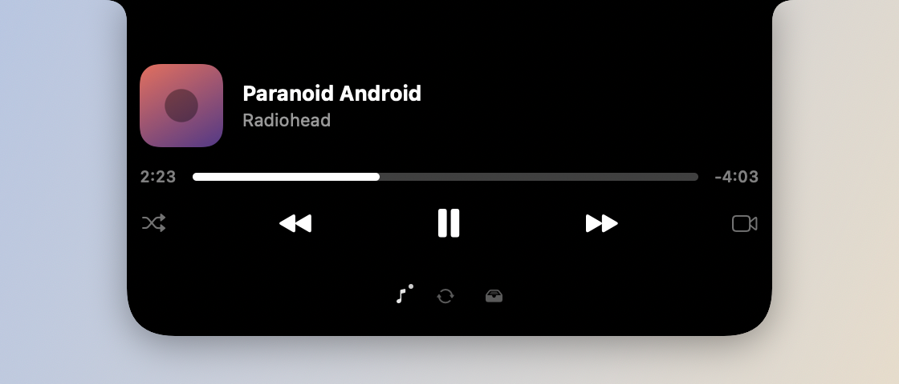

Passe o cursor sobre o notch pra abrir o card: música, Pomodoro, notificações e a prateleira de arquivos ficam ali. Não há ícone no Dock nem janela principal — o app roda em segundo plano.

Ajustes, nota rápida, seletor de cor e esta página saem do ◐ no topo da tela. É por ali que você chega em tudo que não está no card.
Segure a tecla ⌥ direita pra ditar: fale, solte, e o texto aparece onde o cursor está. Um toque no Control esquerdo desenha por cima da tela; Esc para de desenhar.